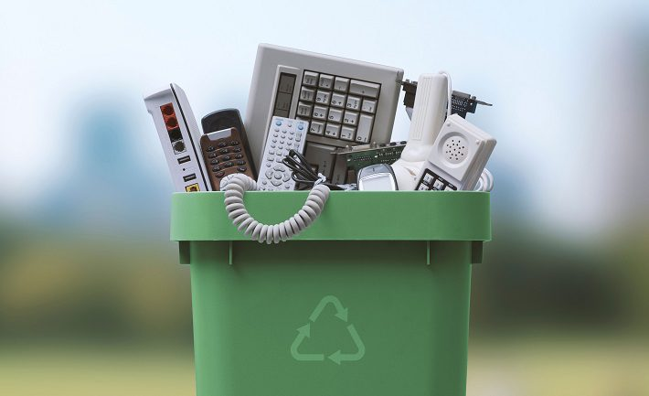
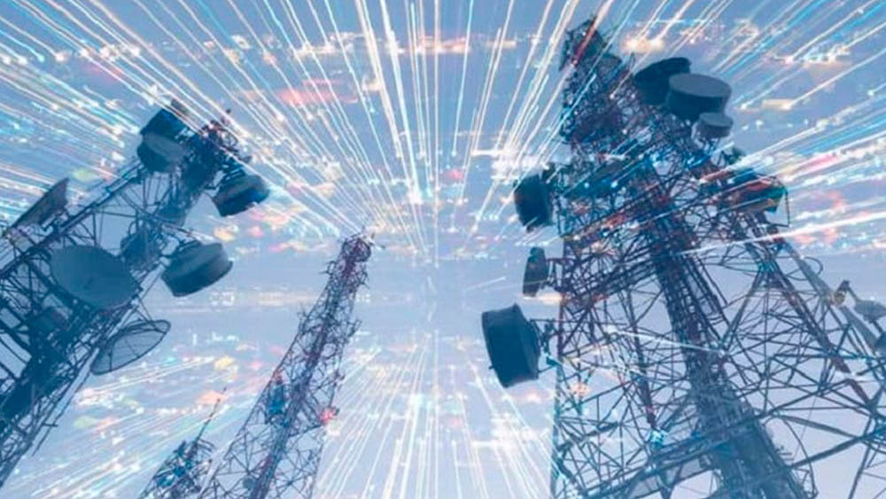
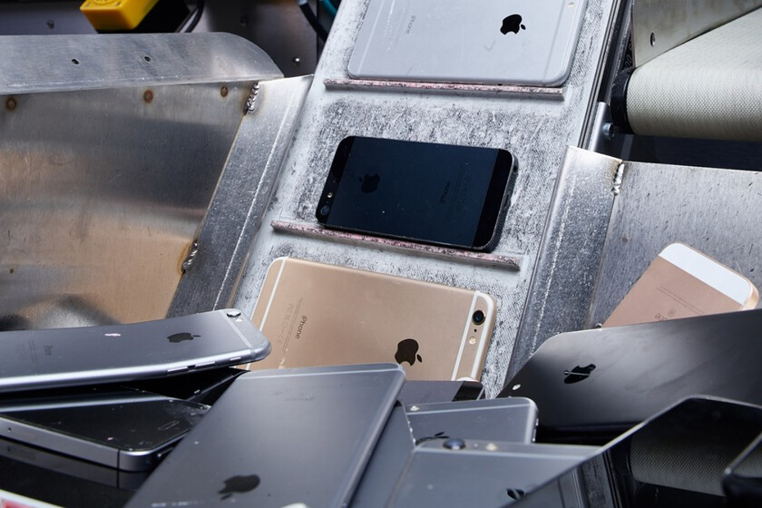
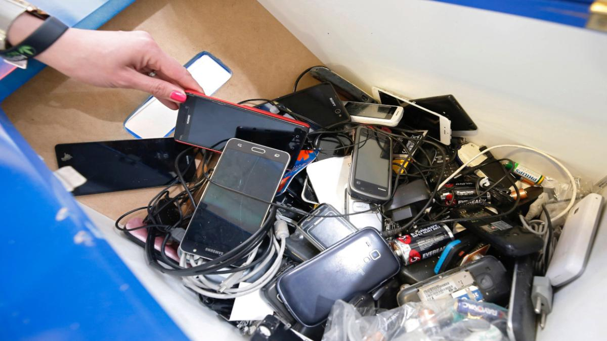
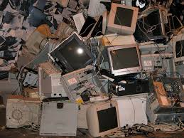
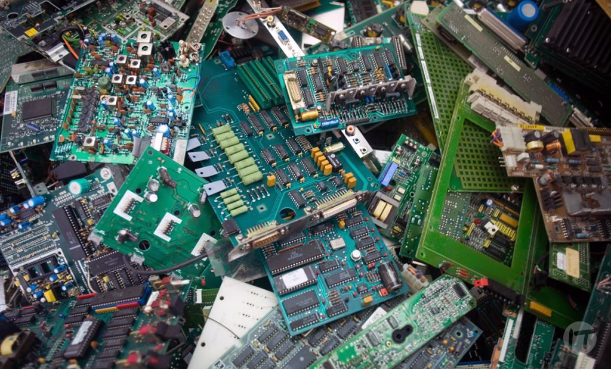
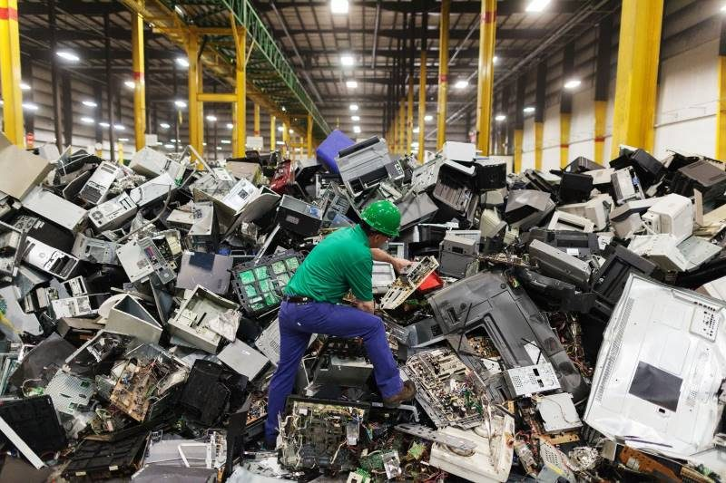
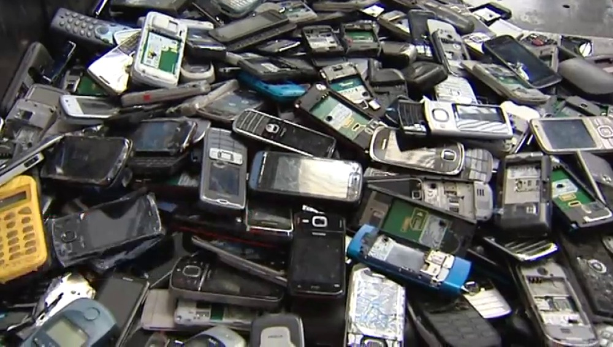
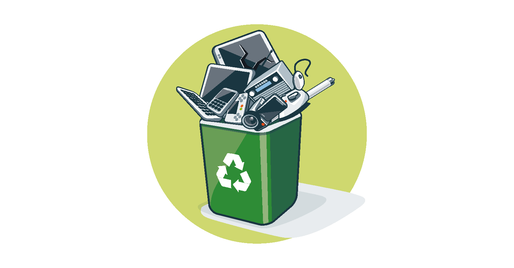

Inicio
La contaminación del aire, el agua y el suelo está afectando nuestro planeta de manera alarmante. Cada día, millones de toneladas de desechos tóxicos y gases contaminantes se liberan al medio ambiente, poniendo en riesgo la salud de las personas, los ecosistemas y el clima global. Sin embargo, todos podemos hacer la diferencia. En esta página, exploraremos las causas de la contaminación, sus efectos y cómo podemos reducirla para proteger nuestro futuro.
Matematica
Niveles de Contaminación 2020-2025
Sistemas Operativos
1.-Centros de datos:
Los centros de datos consumen una gran cantidad de energía para mantener los servidores y sistemas de refrigeración, lo que puede contribuir a las emisiones de gases de efecto invernadero

2. Cables y Conectores
Cables de cobre y fibra óptica: La producción y eliminación de estos materiales puede causar contaminación. Conectores: Pueden estar hechos de plásticos y metales que son difíciles de reciclar.

3. Equipos de Red
Routers y Switches: Consumo energético elevado y generación de residuos electrónicos. Servidores: Requieren grandes cantidades de energía y generan calor, lo que puede contribuir al cambio climático.

4. Residuos Electrónicos
Descarte de Equipos: La obsolescencia de equipos genera residuos que, si no se gestionan adecuadamente, pueden contaminar el suelo y el agua.
5. Emisiones de Carbono
Transporte de Datos: La infraestructura necesaria para la transmisión de datos (torres, cables submarinos, etc.) contribuye a la huella de carbono.

6. Producción de Equipos
Extracción de Recursos: La minería de metales y otros materiales necesarios para fabricar equipos de red puede causar daño ambiental.
7. Contaminación Electromagnética
Radiación: La radiación emitida por dispositivos de comunicación puede tener efectos en la salud y el medio ambiente.
8. Puntos de Acceso (Access Points)
Consumo de Energía: Similar a routers, switches y modems su funcionamiento constante contribuye al consumo de energía y a la huella de carbono.
Conclusión
La combinación de estos factores resalta la importancia de adoptar prácticas sostenibles en el diseño, uso y eliminación de los componentes de la red para minimizar su impacto ambiental.
Lenguaje
El Calentamiento Global:
Introducción: El calentamiento global es uno de los mayores retos del siglo XXI, provocado por la acumulación de gases de efecto invernadero debido a actividades humanas como la quema de combustibles fósiles, la deforestación y la agricultura intensiva. Esto ha causado cambios climáticos extremos, el derretimiento de los casquetes polares y el aumento del nivel del mar. La introducción plantea la necesidad de analizar sus causas, impactos y soluciones, destacando la responsabilidad colectiva para mitigar sus efectos. Tesis: El calentamiento global es causado por actividades humanas insostenibles que desequilibran el planeta. Este fenómeno pone en peligro la biodiversidad, la economía y la calidad de vida futura. Para enfrentarlo, es esencial implementar acciones tanto globales como locales que reduzcan las emisiones y protejan el medio ambiente.
Impacto Ambiental
- Efecto invernadero: Las emisiones de CO₂ aumentan la temperatura global, provocando cambios climáticos extremos.
- Deforestación: Cada año se pierden 10 millones de hectáreas de bosque, reduciendo la capacidad de absorber dióxido de carbono.
- Contaminación marina: Más de 8 millones de toneladas de plástico terminan en los océanos anualmente, dañando ecosistemas marinos.
- Acidificación de los océanos: La absorción de CO₂ por los océanos altera el pH, amenazando especies como los corales.
- Extinción de especies: El 25% de las especies podría extinguirse en 2050 debido a la contaminación y el cambio climático.
Consecuencias en la Salud
- Enfermedades respiratorias: La contaminación del aire causa 7 millones de muertes al año, según la OMS.
- Agua contaminada: Más de 2 mil millones de personas carecen de acceso a agua potable limpia, generando enfermedades como cólera y diarrea.
- Microplásticos en alimentos: Los humanos ingieren aproximadamente 5 gramos de microplásticos por semana, afectando su salud.
- Calidad del aire: Ciudades como Delhi y Pekín superan regularmente los niveles seguros de partículas PM2.5.
- Impacto en comunidades vulnerables: Las personas de bajos recursos sufren más los efectos de la contaminación, al vivir cerca de fuentes industriales.
Impacto Económico
- Pérdidas agrícolas: La contaminación del suelo afecta la productividad agrícola, amenazando la seguridad alimentaria.
- Costos de salud: Las enfermedades causadas por contaminación generan gastos de miles de millones en tratamientos médicos.
- Desastres naturales: Eventos climáticos extremos relacionados con el cambio climático generan daños económicos masivos.
- Pesca insostenible: La contaminación y sobrepesca reducen el rendimiento económico del sector pesquero global.
- Reducción del turismo: Lugares contaminados o degradados pierden su atractivo turístico, afectando economías locales.
Causas y Factores Humanos
- Emisiones industriales: Las fábricas y plantas energéticas son responsables del 21% de las emisiones globales de CO₂.
- Uso de combustibles fósiles: Más del 80% de la energía mundial proviene de fuentes no renovables.
- Producción masiva de plástico: Se producen 400 millones de toneladas de plástico al año, pero solo el 9% se recicla.
- Crecimiento urbano: La expansión de las ciudades genera más desechos, emisiones y contaminación del suelo.
- Transporte: El sector transporte es responsable del 24% de las emisiones globales de gases de efecto invernadero.
Conclusión
El calentamiento global es un problema urgente que requiere la colaboración de todos los sectores de la sociedad para ser enfrentado eficazmente. Si actuamos ahora, podemos evitar consecuencias irreversibles y garantizar un futuro sostenible para las próximas generaciones. El planeta Tierra es nuestro hogar compartido, y protegerlo es nuestra responsabilidad más importante.
Ingles
SUMMARY
Pollution is the stuk eng of humbul statence or padets into the tradioniceand, causing adverse clouds on air, autorisal and Living organisms. It occurs through human activities, such as industrial podution, traropatation, agriculture, and waste dispeel. The main types of pollution include air pollution for chemicals, sewage cand plastic woulet, soil pollution cove to pesticides, heavy metals, and waste and reise pollution. Pollution negatively compartes ecosystems, human health cand biodiversity, leading to issues ash as date change, nopircitary decuses and the destruction of hobrtuts
Física
Planeta contaminado vs planeta sanoRecomendaciones para la contaminación:
1. Reducir el uso de plásticos:
Opta por productos reutilizables y evita los plásticos de un solo uso.
2. Uso de transporte sostenible:
Camina, usa la bicicleta o el transporte público en lugar de vehículos privados.
3. Reciclaje y reutilización:
Separa los residuos y promueve el reciclaje de materiales como papel, vidrio y metales.
4. Energías renovables:
Fomenta el uso de fuentes de energía limpias como la solar, eólica o hidráulica.
5. Plantar árboles:
Los árboles ayudan a absorber CO2 y a mejorar la calidad del aire.
"La Tierra no pertenece al ser humano, el ser humano pertenece a la Tierra."
Que relación tiene la energía con la contaminación
La relación entre la energía y la contaminación es muy estrecha, ya que la forma en que generamos y consumimos energía tiene un impacto directo en el medio ambiente.
- Fuentes de energía no renovables
- Generación de electricidad
- Energías renovables
Historia
Mini juego creando un ambiente sostenibleQuimica
Contaminación del aire
Sucede cuando se liberan gases y partículas dañinas al ambiente, como los que generan los carros, fábricas y la quema de combustibles. Esto causa problemas como el cambio climático, daños a la capa de ozono y enfermedades respiratorias.

Contaminación del agua
Pasa cuando se arrojan desechos a ríos, lagos, mares y fuentes de agua subterránea. Esto afecta a los animales y plantas que viven en el agua, reduce la cantidad de agua limpia disponible y daña los ecosistemas.

Contaminación del suelo
Ocurre cuando se tiran al suelo cosas como plásticos, químicos y otros residuos tóxicos. Esto daña la tierra, reduce su capacidad para producir alimentos y contamina los cultivos que consumimos.
Soporte técnico
¿Qué es la Chatarra Electrónica?
La chatarra electrónica, también conocida como e-waste o residuos electrónicos, se refiere a cualquier dispositivo eléctrico o electrónico que ha llegado al final de su vida útil y que es desechado. Esto incluye una amplia variedad de productos, tales como:
- Dispositivos de consumo
- Electrodomésticos
- Equipos de oficina
- Componentes electrónicos
Impacto Ambiental
- Contaminación: Muchos dispositivos contienen materiales tóxicos como plomo, mercurio y cadmio, que pueden contaminar el suelo y el agua si no se gestionan adecuadamente.
- Recursos: La chatarra electrónica representa una pérdida de recursos valiosos, ya que muchos de sus componentes son reciclables.
Empresas que Más Producen Chatarra Electrónica
-
Apple:
Fabricante de iPhones, iPads y MacBooks. La obsolescencia programada y el lanzamiento frecuente de nuevos modelos contribuyen a la acumulación de chatarra electrónica.

-
Samsung:
Produce una amplia gama de productos electrónicos, incluidos teléfonos inteligentes, televisores y electrodomésticos. La rápida evolución de la tecnología genera desechos electrónicos. -
Sony:
Conocido por sus consolas de videojuegos, televisores y dispositivos de audio. La actualización constante de productos puede llevar a la generación de chatarra.

-
Microsoft:
Fabricante de computadoras, consolas de videojuegos y software. La obsolescencia de hardware y software contribuye a la generación de desechos.

-
LG:
Produce electrodomésticos, televisores y dispositivos móviles. La rápida innovación tecnológica genera chatarra.

-
Dell y HP:
Fabricantes de computadoras y periféricos. La renovación de equipos en empresas y hogares contribuye a la acumulación de desechos electrónicos.

-
Huawei:
Conocido por sus teléfonos inteligentes y equipos de telecomunicaciones. La rápida evolución del mercado de smartphones genera desechos.

Consideraciones
-
Obsolescencia programada:
Muchas de estas empresas diseñan sus productos para que se vuelvan obsoletos rápidamente, lo que aumenta la chatarra electrónica. -
Reciclaje:
Algunas de estas compañías están implementando programas de reciclaje para mitigar el impacto ambiental de sus productos.

Creadores
Josue Fraga
Camila Condor
Alan Quinsasamin
Dylan Tupiza
........